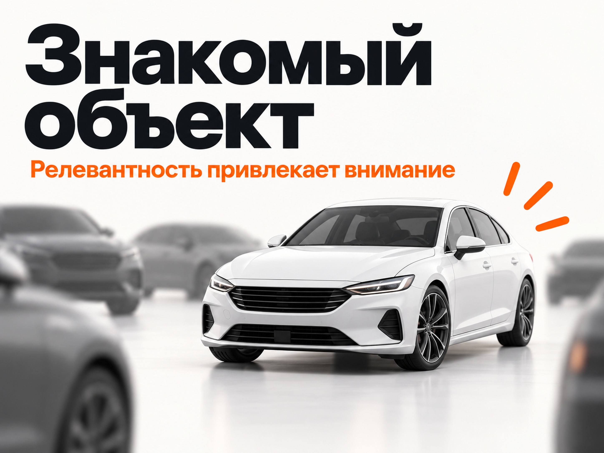
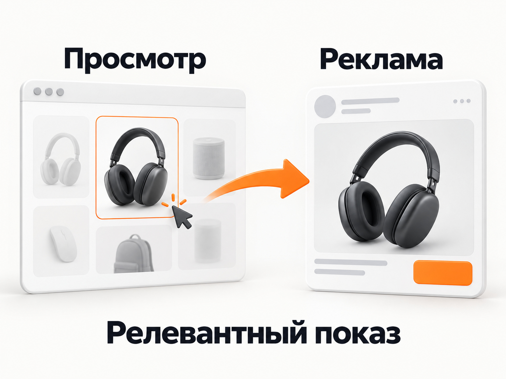

Блог о платном трафике
Баннерная слепота: почему яркая реклама не всегда заметна
Баннерная слепота - это ситуация, когда человек сознательно или автоматически игнорирует рекламные блоки, даже если они находятся прямо перед глазами.
Баннер может быть крупным, ярким и анимированным, но пользователь его фактически не воспринимает.
Поэтому популярный совет «сделайте баннер ярче, добавьте крупный текст и побольше контраста» работает далеко не всегда. Иногда получается обратный эффект: чем сильнее изображение похоже на рекламу, тем быстрее мозг относит его к информационному шуму и перестает анализировать.
Главный принцип борьбы с баннерной слепотой в performance-рекламе я бы сформулировал иначе:
Не пытайтесь сделать рекламу громче. Постарайтесь показать человеку именно то, что уже связано с его текущим интересом.
Если пользователь недавно искал конкретный автомобиль, товар, услугу или решение своей проблемы, знакомый объект может привлечь его внимание намного быстрее, чем самый красивый универсальный рекламный макет.
Что такое баннерная слепота
Термин появился еще в 1998 году после исследований Jan Panero Benway и David M. Lane. Пользователи выполняли задачи на веб-страницах и регулярно пропускали заметные графические блоки, даже когда внутри них находилась нужная информация.
Источник: исследование Jan Panero Benway и David M. Lane.
Позже эффект неоднократно подтверждали исследования с отслеживанием движения глаз.
Nielsen Norman Group описывает баннерную слепоту как разновидность избирательного внимания. Человеку постоянно приходится отсеивать огромный объем визуальной информации и концентрироваться на том, что связано с его текущей задачей. Со временем пользователи учатся распознавать типичные рекламные зоны и оформление рекламы и практически автоматически их пропускать.
Источник: Nielsen Norman Group.
Поэтому проблема не в том, что у баннера недостаточно красного цвета, крупного шрифта или анимации. Проблема может быть в том, что пользователь уже классифицировал этот блок как «реклама, которая мне сейчас не нужна».
Почему слишком яркий баннер может работать хуже
Представьте страницу сайта или ленту приложения. Вокруг пользователя десятки изображений, заголовков, кнопок, уведомлений и рекламных блоков.
Если попытаться выделиться из этого потока еще более кричащим дизайном, результат не обязательно станет лучше.
Nielsen Norman Group в исследованиях отмечает интересный эффект: пользователи игнорировали рекламный блок внутри основного контента именно потому, что он визуально сильно отличался от окружающей страницы. Цветной фон, необычное форматирование, прямоугольная форма и текст внутри изображения помогали мгновенно распознать в нем рекламу.
Источник: Nielsen Norman Group.
Получается парадокс.
Маркетолог думает: «Нужно сильнее выделить баннер».
Пользователь видит: «Это реклама» - и сразу переключает внимание дальше.
Похожую проблему описывает и Mindbox: насыщенные цвета, крупный текст и анимация сами по себе не гарантируют внимания. Слишком характерное рекламное оформление может, наоборот, включить привычный фильтр.
Поэтому я бы не рассматривал яркость как основной способ пробить баннерную слепоту.
Много текста на картинке проблему тоже не решает
Вторая распространенная идея - попытаться разместить на одном баннере сразу весь оффер.
В итоге появляются:
- огромный заголовок;
- цена;
- скидка;
- пять преимуществ;
- телефон;
- срок акции;
- доставка;
- еще несколько пояснений.
Человек, который вообще еще не решил уделить рекламе внимание, должен сначала разобрать эту конструкцию.
Получается неправильная последовательность. Сначала нужно добиться узнавания и интереса, и только затем передавать подробности.
Особенно плохо это работает в РСЯ и других рекламных сетях, где пользователь в момент показа обычно занят совершенно другим контентом.
Подробнее - в статье «Что такое РСЯ в Яндекс Директ и как она работает».
Что действительно помогает привлечь внимание
Самый сильный сигнал - соответствие рекламы текущей задаче пользователя.
Исследования с eye tracking показывали, что люди чаще фиксировали взгляд на баннерах, связанных с целью их текущего поиска, и лучше запоминали такие объявления.
Источник: исследование с eye tracking.
Это принципиальная разница.
Можно показать человеку красивый автомобиль. А можно показать автомобиль, который он вчера несколько раз искал.
Второй объект уже существует в его текущем информационном поле. Именно поэтому хорошая персонализация часто важнее декоративного дизайна.
Пример с автомобилем
Допустим, человек несколько дней изучает варианты доставки автомобиля из Кореи. Его интересует белый Audi Q6.
Он смотрит объявления, фотографии, комплектации, цены и условия доставки. После этого открывает новостную статью или другое приложение.
В рекламном блоке появляется стандартный креатив: «Автомобили из Кореи под заказ». На изображении стоит несколько случайных машин.
Такое объявление может быть технически красивым, но оно ничем не связано с конкретным образом, который сейчас находится у пользователя в голове.
А теперь другой вариант. На баннере крупно показан белый автомобиль той модели, которой человек интересовался. В этом случае ему даже не обязательно сначала читать рекламный текст. Внимание может привлечь сам знакомый объект.
Не потому, что картинка ярче. Потому что она релевантнее.

Узнавание сильнее визуального шума
Это особенно хорошо заметно в товарной рекламе.
Человек смотрел определенный диван - позже видит этот диван. Изучал конкретную модель ноутбука - встречает похожее предложение. Просматривал квартиру определенного типа - реклама продолжает показывать объекты из этой категории. Искал конкретную услугу - получает объявление именно по этой задаче.
Мозгу не требуется сначала расшифровывать рекламный посыл. Он узнает объект, который уже имеет для человека значение.
Отсюда возникает важный вывод для маркетолога: креатив нужно проектировать не только от продукта, но и от контекста человека, которому он показывается.
Красивый универсальный баннер пытается понравиться всем. Релевантный баннер пытается попасть в конкретный интерес.
Как это работает в Яндекс Директе
В Рекламной сети Яндекса этот принцип давно заложен непосредственно в механику рекламной системы.
Яндекс использует поведенческий таргетинг. Система анализирует интересы пользователя, в том числе его поисковые запросы, и старается подбирать соответствующие предложения. Причем учитываются как более устойчивые, так и краткосрочные интересы.
Источник: справка Яндекса о поведенческом таргетинге.
Есть и более точный механизм - офферный ретаргетинг.
Если человек ранее просматривал определенные предложения или разделы каталога на сайте, Яндекс может снова показать ему эти предложения или рекомендованные объекты в рекламе РСЯ. Для товарных объявлений при настроенной электронной коммерции система может сопоставлять просмотренные товары с ID из фида.
Источник: справка Яндекса об офферном ретаргетинге.
То есть идея «покажите человеку то, что он уже смотрел» - это не абстрактная маркетинговая теория. На этом построены реальные рекламные технологии.
Ретаргетинг по сегментам позволяет отдельно работать и с людьми, которые уже посещали сайт, смотрели конкретные страницы или выполняли определенные действия.
Источник: справка Яндекса о ретаргетинге.
Подробнее - в статье о ретаргетинге в Яндекс Директе.

Значит ли это, что дизайн вообще не важен
Нет.
Плохой дизайн способен испортить даже очень релевантный показ.
Креатив должен:
- быстро читаться;
- иметь понятный визуальный центр;
- показывать продукт достаточно крупно;
- не быть перегруженным;
- нормально отображаться на конкретном рекламном месте;
- передавать понятный оффер.
Но дизайн работает уже поверх релевантности.
Если человеку не нужен ваш продукт, огромная красная кнопка эту проблему не исправит. Если ему нужен конкретный продукт, зачастую достаточно просто нормально его показать.
Поэтому при работе с креативами я бы сначала задавал вопрос не «как сильнее выделиться?», а «что именно сейчас должен увидеть этот человек?».
А как же необычные баннеры, лица, анимация и разрыв шаблона
Такие приемы действительно могут влиять на внимание.
Исследования баннерной рекламы изучали расположение объявления, движение, человеческие лица, направление взгляда и другие визуальные факторы. В некоторых условиях они увеличивали количество фиксаций внимания.
Источник: исследование визуальных факторов баннерной рекламы.
Поэтому утверждать, что персонализация является буквально единственным возможным способом борьбы с баннерной слепотой, было бы неправильно.
Но здесь есть принципиальная разница.
Визуальный прием заставляет посмотреть. Релевантность дает причину посмотреть.
Можно остановить взгляд странным изображением, необычным цветом или движением. Но после первой фиксации пользователь все равно должен понять, что предложение имеет к нему отношение.
Иначе внимание было, а полезного рекламного контакта не произошло.
Не оптимизируйте рекламу только под CTR
У баннерной слепоты есть еще одна ловушка.
Маркетолог начинает бесконечно переделывать картинки, пытаясь увеличить кликабельность. Появляются более агрессивные заголовки, стрелки, кричащие цвета, лица, огромные цифры.
CTR действительно иногда растет. Но задача performance-рекламы заключается не в максимальном количестве кликов.
Нужно смотреть, кто пришел после клика, оставил ли заявку, совершил ли покупку и окупилась ли реклама.
Особенно это касается РСЯ, где высокий CTR сам по себе не означает хорошее качество трафика.
Подробнее - в статье «Какой CTR считается хорошим в Яндекс Директ».
Поэтому правильнее тестировать связку целиком:
аудитория → креатив → предложение → посадочная страница → конверсия → продажа.
Баннер - только один элемент этой цепочки.
Как пробить баннерную слепоту на практике
Если свести все к рабочему алгоритму, я бы делал так.
Сначала определите, что именно интересует конкретный сегмент аудитории. Не «автомобили», а конкретные марки, модели, бюджет, страна доставки или другой значимый признак.
Затем постарайтесь показать в рекламе именно этот объект или максимально близкое к нему предложение.
Не перегружайте изображение. Если сам товар уже узнаваем и релевантен, ему не требуется конкурировать с десятью рекламными надписями.
Используйте данные о поведении там, где это возможно: посещенные страницы, просмотренные товары, категории, корзину, цели Метрики, сегменты аудитории.
После запуска оценивайте не красоту баннера и даже не CTR отдельно, а конечные конверсии и качество трафика.
И тестируйте гипотезы. Даже логичный и релевантный креатив нельзя заранее объявить победителем без статистики.
Главная ошибка в борьбе с баннерной слепотой
Главная ошибка - пытаться победить информационный шум еще большим количеством информационного шума.
Ярче. Крупнее. Больше текста. Больше элементов. Больше анимации.
Пользователь ежедневно видит огромное количество визуальной информации и давно научился ее фильтровать. Еще один кричащий баннер может просто попасть под тот же фильтр.
Гораздо сильнее работает другой подход: попасть в уже существующий интерес человека.
Не заставлять пользователя разбираться, почему ему нужно посмотреть на рекламу. Показать ему то, что он уже хотел увидеть.
Это и есть принцип, на котором я бы строил борьбу с баннерной слепотой в performance-маркетинге.